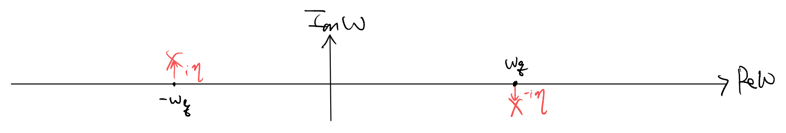
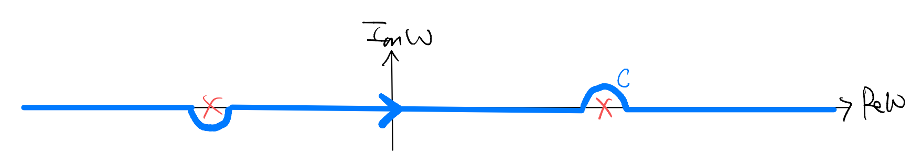
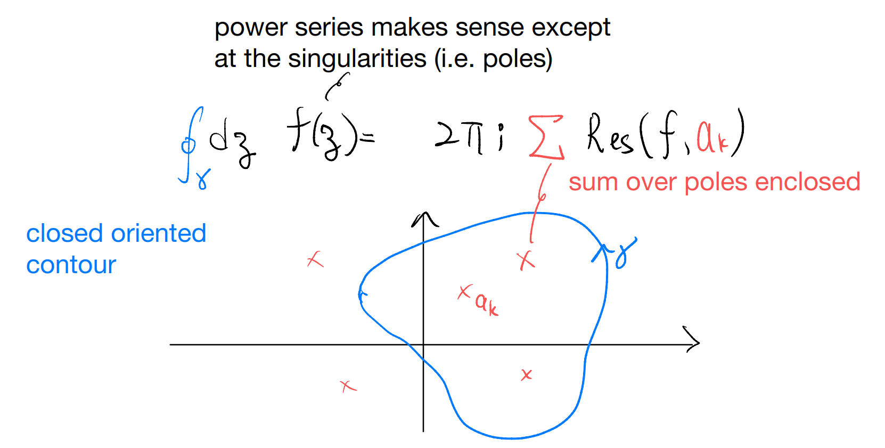
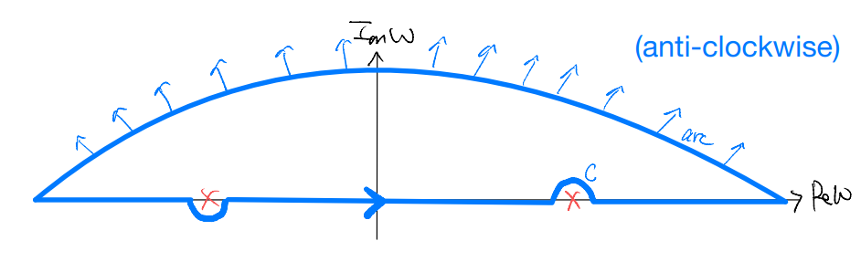
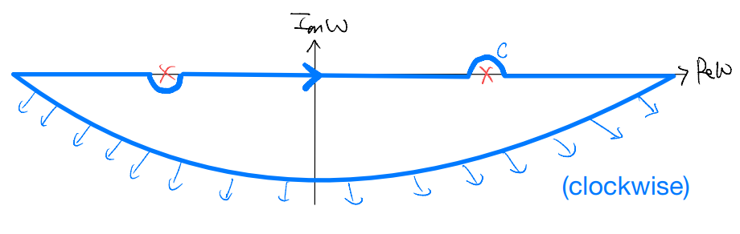
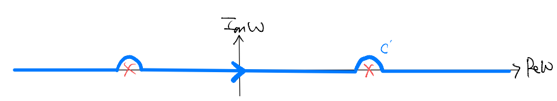
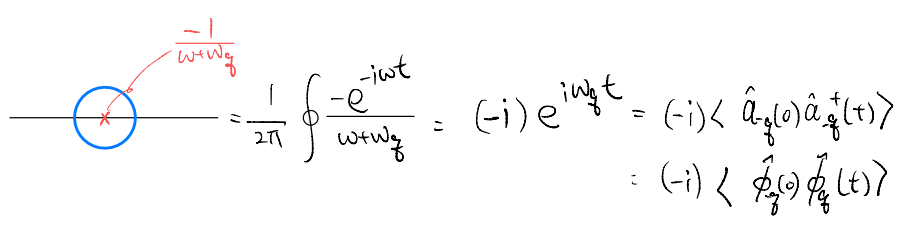
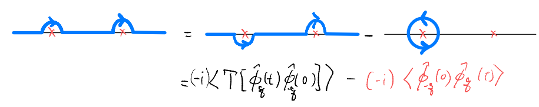
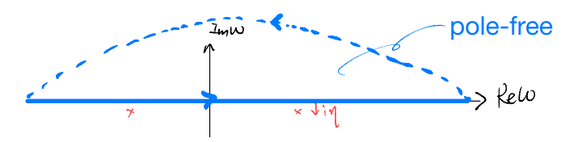
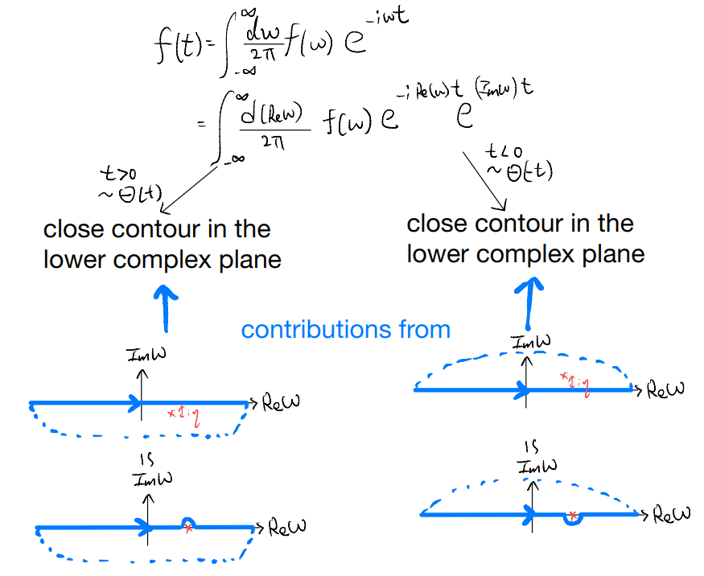

Lec12
Contents
Lec12¶
Note
This is NOT the official course PHYS5340 website yet!
If you are student in this course, always take the lecture notes as the correct one if you find any differences between lecture notes and website contents
If you are just passerby, use the materials below at your own risk. Since the website is still the first version (even alpha version), there could be some typos, incorrect/inaccurate/improper statements.
Note
All materials in this website are based on the course offered at HKUST
Note
As a “casual course”, we provide only general references but not specific ones to the materials introduced
Note
All materials’ copyright in this website are reserved for the course lecturer
If you want to use the material somewhere, you might need to contact the lecturer first
Note
Contribution is always welcome. if you find any typo, incorrect/inaccurate/improper statements or necessary references, do not hesitate to
raise an issue on github repo
make an pull request on github repo
contact me directly
20220316
Topics
Propagators
Frequency space, contours and real-time Green functions
Goals
Arriving at a more systematic treatment of the various notion of Green’s functions we have encountered
Bare phonon propagator¶
Let us revisit the free-phonon problem again from this lens of T-contractions and correlation functions. Consider again
where for simplicity we have restricted ourselves to a single “branch” and so suppressed any additional indices which might be attached to the phonon operators aside from the (crystal) momentum \(q\).
In the real space, the phonon operators are related to the actual position (deviation) operators of the atoms through
In the Heisenberg picture, the phonon operators evolve in time according to
And we may evaluate the one-particle Green’s function with respect to the phonon vacuum (superscript \(t\) emphasize it corresponds to the time-ordered two-point function)
which depends only on \(r-r'\) and \(t-t'\)
The translation invariance, exposed in the fact that the two-point function depends only on \(r-r'\) implies \(q\) is a good quantum number and it is natural to Fourier transform
We may further Fourier transform to the frequency space, using our “exponential damping trick”
This is called the free/bare phonon “propagator”. It is customary to denote it by \(D\) (instead of \(G\)), since in an electron-phonon problem one might want to reserve \(G\) for the electrons.
Contours, Green’s function, Feynman’s \(i\epsilon\) prescription¶
Going from the real-time to frequency space, we have used an exponential damping term to regulate the oscillatory integral extending to \(t\to\pm\infty\). In particular, the sign of the damping depends on the sign of \(t\). We first introduced such tricks by alluding to the physical reality that our system cannot possibly exist all the way up to \(t\to\pm\infty\) anyway, and so it is natural to regulate the integral by damping it off. Here, we provide an alternative way to make sense of such treatment.
We first notice that the (bare) phonon Green’s function \(D^t(q,\omega)\), viewed as a complex function, contains two poles
which are infinitesimally displaced from the real line.

Now, imagine Fourier transforming back to the real time, which calls for an integral along the real line, with the two poles approaching our integration contour, Such integrals could alternatively be computed by trading the \(\pm i\eta\) with an infinitesimal deformation of the integration contour.

As a sanity check, let us verify that we could indeed go back to the real-time Green’s function by performing such contour integrals. Consider
Notice we have dropped the \(\pm i\eta\), with the corresponding information encoded in how the contour \(C\) is specified.
One could evaluate this integral honestly, by splitting the contour \(C\) into \(5\) segments: three straight lines and two semi-circles. As the deformation is only infinitesimal, the “straight line” integrals return the Cauchy principal value whereas the “semi-circles” give half of the residues. In addition, for the principal part one ultimately gets the Dirichlet sinc integral, which gives \(\sim e^{\pm i\omega_q t}(i\pi \mathrm{sgn}(t))\). Combined with the partial residues, one does get back the original time-ordered real-time Green’s function.
Instead of going through the details of the steps sketeched above, let’s use the usual “physicist’s argument” to evaluate the integral. The main idea is to use the residue theorem, which states that (loosely) power series make sense except at the singularities (i.e., poles)

and for a meromorphic function with a simple pole, taking the form
the residue is simply the coefficient \(g_0\).
Now, back to our problem: to take advantage of the residue theorem we would want to “close” our contour. The natural choice will be to complete it with an arc which we send off to infinity, e.g.,

We then see that, by the residue theorem, only one of the poles contribute:
almost! But we need to know what is the contribution from the arc. In what we considered above, we let \(\omega\) go to infinity on the upper complex plane. In other words, we consider
as such, in the integrand we have
and it is well-behaved (and exponentially suppressed) only if we have \(t<0\) to start with. Provided \(t<0\), the arc contribution goes to zero as the integrand is now exponentially suppressed. This gives
Now, to obtain the result for \(t>0\), we should consider the alternative way of closing off our contour (clockwise)

which now encloses the other pole at \(\omega=\omega_q\). The same calculation as before then gives
We may then combine the two cases into
as promised. We note in passing that, this is also commonly referred to as the (Feynman) “propagator”.
Such time-ordered correlation function shows up in perturbation expansion (Feynman diagrams etc.), and we will see that they can be interpreted as the free propagation of phonons, whence the name.
One may wonder what’s the significance of undergoing such a lengthy discussion in order to simply Fourier transform back to the real time. The catch is that, in the calculation above, it will be natural to consider alternative contours which circumvent the two poles in some other means. For instance, consider the contour

It doesn’t encircle any poles if we complete it in the upper complex plane (Fourier transform with \(t<0\)), and enclose both poles when we complete in the lower complex plane. This gives
What is the process corresponding to this real-time Green’s function? Notice that, what we have changed is really the integration around the pole at \(\omega=-\omega_q\). First consider

Now, we can compare the two contours considered

i.e., it is the expectation value of a commutator with time \(t>0\).
By closing the contour on the lower complex plane, our real-time Green’s function is non-vanishing only for \(t>0\), which suggests a kind of causality, in the sense that we only allow time to move “forward” but not backward. Indeed, this is known as the causal / retarded Green’s function of the phonons, and is closely related to the response of a system when we perturb it (and the system can only respond after we perturb it, by causality). More later.
Lastly, a comment on contours vs \(i\eta\): in the above, we see that the same frequency space Green’s function, combined with different contour prescription (for avoiding the singularities on the real axis), gives rise to different real-time Green’s functions. Yet, we also argued (heuristically) that, the contour prescription can be understood simply by the small shifts \(\pm i\eta\) kicking the poles off the real axis. So, instead of specifying different contours, we can also stick with the real line (and leave the “arc” part implicit, dependent on the sign of time), and instead assign the \(\pm i\eta\) as the definition for different Green’s functions.
This latter perspective is perhaps more popular among physicists, and this is called “Feynman’s \(i\epsilon\) prescription”. (Probably he used \(\epsilon\) for what we denoted by \(\eta\) here.)
A particularly important “pole structure” for our next topic (linear response) is as follows:

where the \(i\eta\) displaces the poles to the lower complex plane. This corresponds to the contours we considered just now for the phonons:
When we Fourier transform back to real time, the integral vanishes when we close the contour on the upper complex plane, i.e., the only contribution comes from \(t>0\), and the real-time Green’s function is “retarded” in the sense that
To summarize, when we consider Fourier transform back to real time
